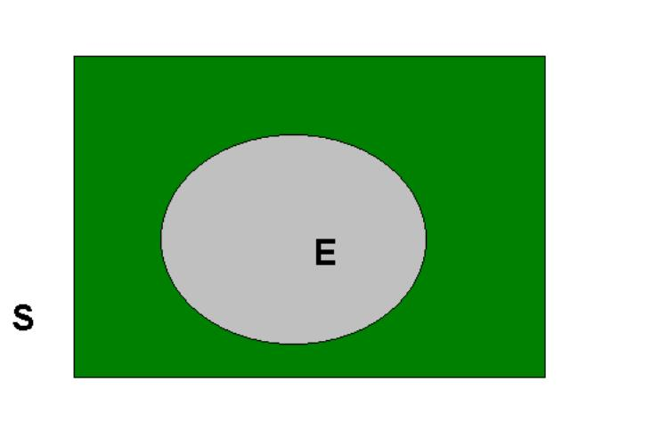
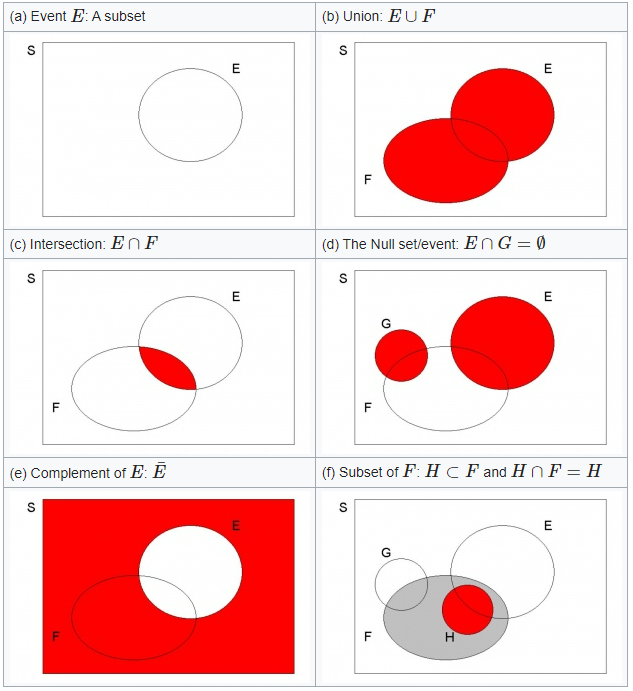

7 Introducing Probability
7.1 Introduction
This video gives a brief introduction into why economists and social scientists should study probabilities (YouTube, 4min).
{{ < video https://www.youtube.com/watch?v=I3OFG1QlDLc > }}
So far we have been looking at ways of summarising samples of data drawn from an underlying population of interest. Although at times tedious, all such arithmetic calculations are fairly mechanical and straightforward to apply. To remind ourselves, one of the primary reasons for wishing to summarise data is so assist in the development of inferences about the population from which the data were taken. That is to say, we would like to elicit some information about the mechanism which generated the observed data.
Perhaps you can recall this little schematic which we discussed in the introduction.

We now start on the process of developing mathematical ways of formulating inferences and this requires the use of probability. This becomes clear if we think back to one of the early questions posed in this course: “prior to sampling is it possible to predict with absolute certainty what will be observed?” The answer to this question is “no”; although it would be of interest to know how likely it is that certain values would be observed. Or, what is the probability of observing certain values?
Before proceeding, we need some more tools:
7.2 Venn diagrams
Venn diagrams (and diagrams in general) are of enormous help in trying to understand, and manipulate probability. We begin with some basic definitions, some of which we have encountered before.
Experiment: any process which, when applied, provides data or an outcome; e.g., rolling a dice and observing the number of dots on the upturned face; recording the amount of rainfall in Manchester over a period of time.
Sample Space: set of possible outcomes of an experiment; e.g., \(S\) (or $$) \(=\) \(\{1,2,3,4,5,6\}\), which is the sample space of rolling a dice. Or \(S=\{x;x\geq 0\}\), which is the sample space of an experiment where the outcomes can be any real non-negative number, or the set of real non-negative real numbers.
Simple Event: just one of the possible outcomes on \(S\)
Event: a subset of \(S\), denoted \(E\subset S\); e.g., \(E=\left\{ 2,4,6\right\}\) (i.e. any even number on a dice) or \(E=\left\{ x;4<x\leq 10\right\}\), which means “the set of real numbers which are strictly bigger than \(4\) but less than or equal to \(10\)”.
Note that an event, \(E\), is a collection of simple events. You will have to decide what your event of interest is and that depends on the situation.
Such concepts can be represented by means of the following Venn Diagram:

The sample space, \(S\), is depicted as a closed rectangle, and the event \(E\) is a closed loop wholly contained within \(S\) and we write (in set notation) \(E\subset S\).
In dealing with probability, and in particular the probability of an event (or events) occurring, we shall need to be familiar with unions, intersections and complements.
To illustrate these concepts, consider the sample space \(S=\{x;x\geq 0\}\). In this example the sample space represents an infinite set of numbers. Don’t let the square finite sample space, represented in the next Figure, distract you from that. The following events defined on \(S\), as depicted in the Figure:
$E={x;4<x},,F={x;7<x},,G={x;x>15},,H={x;9<x} $.

Note that the size of the graphical representation does not represent any probabilities here.
- Event \(E\): This graphical representation merely illustrates that \(E\) is a subset of \(S\), \(E\subset S\)
- Union: \(E\cup F\)
The union of \(E\) and \(F\) is denoted \(E\cup F\), with \(E\cup F=\{x;4<x\leq 17\}\); i.e., it contains elements (simple events) which are either in \(E\) or in \(F\) or (perhaps) in both. This is illustrated on the Venn diagram by the dark shaded area in diagram (b).
- Union: \(E\cup F\)
- Intersection: \(E\cap F\)
The intersection of \(E\) and \(F\) is denoted \(E\cap F\), with $EF={ x;7x} $; i.e., it contains elements (simple events) which are common to both \(E\) and \(F\). Again this is depicted by the dark shaded area in (c).
- Intersection: \(E\cap F\)
- The Null set/event: $EG=$
If events have no elements in common (as, for example, \(E\) and \(G\)) then they are said to be mutually exclusive, and we can write \(E\cap G=\emptyset\), meaning the null set which contains no elements. Such a situation is illustrated on the Venn Diagram by events (the two shaded events in (d)) which do not overlap. Notice however that \(G\cap F\neq \emptyset\), since \(G\) and \(F\) have elements in common.
- The Null set/event: $EG=$
- Complement of \(E\): \(\bar{E}\)
The complement of an event \(E\), say, is everything defined on the sample space which is not in \(E\) This event is denoted \(\bar{E}\), the dark shaded area in (e); here \(\bar{E}=\left\{ x;x\leq 4\right\} \cup \left\{ x;x>10\right\}\). An alternative notation that is sometimes used for the complement of an event \(E\) is \(E^c\).
- Complement of \(E\): \(\bar{E}\)
- Subset of \(F\): \(H\subset F\) and \(H\cap F=H\)
Finally note that \(H\) is a sub-set of \(F\); see (f). It is depicted as the dark closed loop wholly contained within \(F\), the lighter shaded area, so that \(H\cap F=H\); if an element in the sample space is a member of \(H\) then it must also be member of \(F\). (In mathematical logic, we employ this scenario to indicate that “\(H\) implies \(F\)”, but not necessarily vice-versa.) Notice that $GH=$ but \(H\cap E\neq \emptyset\).
- Subset of \(F\): \(H\subset F\) and \(H\cap F=H\)
This video goes through most elements of the above example (YouTube, 8min).
{{ < video https://www.youtube.com/watch?v=RYRze4XXlrE >}}